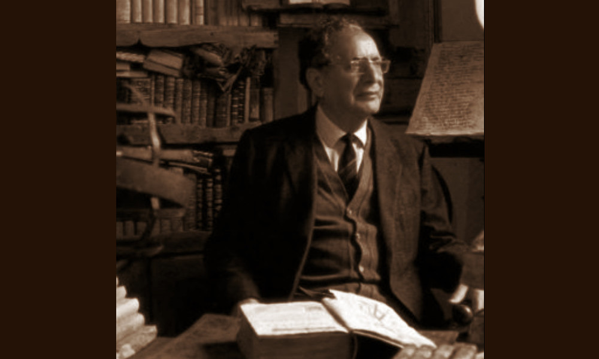

Bruschi Ivan

- Dati biografici
- Albero familiare
- Luoghi
- Relazioni
- Eventi
- Bibliografia
- Opere trattate
Nato ad Arezzo nel 1920, Ivan Bruschi (1920-1996) ereditò dal padre Pietro la passione per gli
oggetti d’arte e l’antiquariato e mosse i primi passi nella galleria fiorentina gestita dal fratello
Livio (1906-1973).
Nel 1956 tornò nella città natale, scegliendo il Palazzo del Capitano del Popolo, posseduto
dalla famiglia fin dall’inizio del Novecento, come propria residenza e sede della collezione
personale in via di formazione. Danneggiato durante la Seconda Guerra Mondiale, lo restaurò
a partire dagli anni Sessanta, rendendolo negli anni un importante salotto culturale cittadino.
Nel 1967 aprì la “Galleria Bruschi” in piazza San Francesco e contemporaneamente ideò la Fiera
Antiquaria di Arezzo, una manifestazione a cadenza mensile ospitata tra Piazza Grande e alcune vie
cittadine, che sarebbe diventata nel corso degli anni un appuntamento frequentato dal circuito
antiquariale nazionale e un volano per le attività artigiane del centro storico. Nel contesto cittadino,
Bruschi assunse sempre maggiore rilevanza economica e culturale.
Alla sua morte, nel 1996, lasciò a Banca Etruria il Palazzo e la sua variegata collezione di arte antica,
dipinti toscani soprattutto del Cinque e dell’Ottocento, monete, armi, sculture e gioielli. Per sua
volontà testamentaria, la Fondazione a lui intitolata divenne casa museo e centro di promozione
culturale in materia artistica e antiquariale con l’organizzazione di mostre, convegni, concerti e
spettacoli.
Dal 2021, la Fondazione Ivan Bruschi è parte del patrimonio artistico di Intesa Sanpaolo.
Eventi signficativi nell'attività antiquariale:
- 1968 - Inaugurazione Fiera Antiquaria di Arezzo: Ivan Bruschi organizza la prima Fiera antiquaria, che da allora si svolge ogni mese ad Arezzo
- 1996 - Inaugurazione Fondazione Ivan Bruschi: L'antiquario Ivan Bruschi lascia in eredità al comune di Arezzo il Palazzo del Capitano del Popolo e la sua collezione. Il comune apre la Fondazione a lui dedicata
Bibliografia essenziale:
- Batini, G. (1961), L'antiquario, Firenze, Vallecchi
- Bellini, L., De Chirico, G. (1947), Nel mondo degli antiquari, Firenze, Arnaud
Vedi le opere transitate presso l'antiquario presenti nel catalogo della Fondazione Zeri